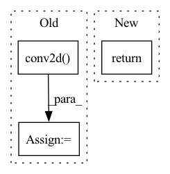

Pattern ID :38624
Before Change
x = tensor_fn(x, dtype, device)
filters = tensor_fn(filters, dtype, device)
true_res = tensor_fn(true_res, dtype, device)
ret = ivy.conv2d( x, filters, 1, padding)
// type test
assert ivy.is_ivy_array(ret)
// cardinality test
assert ret.shape == true_res.shapeAfter Change
device):
if fw in ["tensorflow", "torch"] and "cpu" in device:
// tf conv2d does not work when CUDA is installed, but array is on CPU
return
x = np.random.uniform(size=array_shape).astype(dtype)
x = np.expand_dims(x, (-1))
filters = np.random.uniform(size=(filter_shape,In pattern: SUPERPATTERN
Frequency: 3
Non-data size: 3
Instances Fragment ID: 110508628
Project Name: ivy-dl/ivy
Commit Name: 6d123fb0a211d23d11b929edb59513a5f1c69322
Time: 2022-06-11
Author: sherrytst30@gmail.com
File Name: ivy_tests/test_ivy/test_functional/test_nn/test_layers.py
M Class Name: AnonimousClass
N Class Name: AnonimousClass
M Method Name: test_conv2d(14)
N Method Name: test_conv2d(5)
M Parent Class:
N Parent Class:
M File Name: ivy_tests/test_ivy/test_functional/test_nn/test_layers.py
N File Name: ivy_tests/test_ivy/test_functional/test_nn/test_layers.py
M Start Line: 323
M End Line: 338
N Start Line: 256
N End Line: 295
Before Change
[1., -4., 1.],
[0., 1., 0.]])
kernel = kernel.view(1, 1, 3, 3).repeat(1, n_channels, 1, 1)
smooth_feat = torch.sum(torch.abs(F.conv2d( smap, kernel) ))
persist_feat = 0.0 // to do
After Change
persist_feats = 0.0 // todo (N)
exp_feats = self.lambd_sp * sparse_feats + self.lambd_sm * smooth_feats + self.lambd_pe * persist_feats
return exp_feats.median()
Fragment ID: 110508625
Project Name: ain-soph/trojanzoo
Commit Name: afe7bbd2d2e9f901ee8cf56c3b9320b9272a81af
Time: 2020-07-22
Author: ain-soph@live.com
File Name: trojanzoo/defense/backdoor/neuron_inspect.py
M Class Name: Neuron_Inspect
N Class Name: Neuron_Inspect
M Method Name: cal_explanation_feature(2)
N Method Name: cal_explanation_feature(2)
M Parent Class: Defense_Backdoor
N Parent Class: Defense_Backdoor
M File Name: trojanzoo/defense/backdoor/neuron_inspect.py
N File Name: trojanzoo/defense/backdoor/neuron_inspect.py
M Start Line: 68
M End Line: 84
N Start Line: 68
N End Line: 73
Before Change
weight = torch.ones(c2, c1, int(self.scale_factor), int(self.scale_factor), device=x.device)
tmp = F.conv2d(
tmp.reshape(-1, c2, h2, w2),
weight=weight,
bias=None,
stride=int(self.scale_factor),
padding=0,
dilation=1,
groups=1,
)
return tmp.reshape(b, c1 * h1 * w1)
After Change
if diag:
return self._jacobian_wrt_input_diag_sandwich(x, val, tmp)
else:
return self._jacobian_wrt_input_full_sandwich(x, val, tmp)
def _jacobian_wrt_input_diag_sandwich(self, x: Tensor, val: Tensor, diag_tmp: Tensor) -> Tensor:
b, c1, h1, w1 = x.shape Fragment ID: 110508620
Project Name: machinelearninglifescience/stochman
Commit Name: 43456fffffef4688a91e34a9582c7f45c8a89f78
Time: 2022-04-13
Author: miani.1996@gmail.com
File Name: stochman/nnj.py
M Class Name: Upsample
N Class Name: Upsample
M Method Name: _jacobian_wrt_input_sandwich(5)
N Method Name: _jacobian_wrt_input_sandwich(5)
M Parent Class: nn.Upsample,AbstractJacobian
N Parent Class: nn.Upsample,AbstractJacobian
M File Name: stochman/nnj.py
N File Name: stochman/nnj.py
M Start Line: 138
M End Line: 153
N Start Line: 137
N End Line: 142